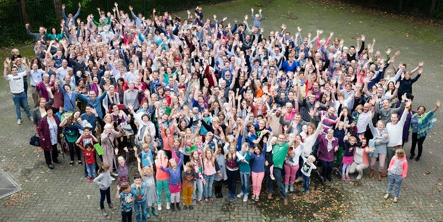
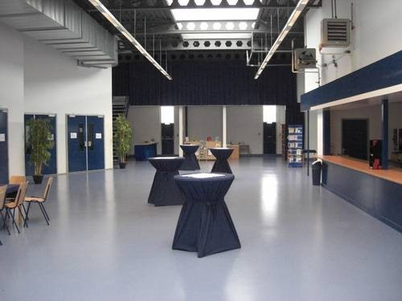
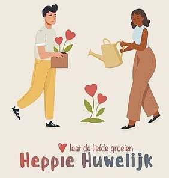
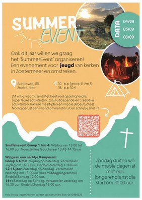
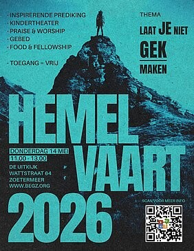

Hartelijk welkom bij Parousia
Voor zoekers willen we een richtingwijzer zijn naar Jezus. Met elkaar vormen we een levende gemeenschap, op een manier die past bij de tijd waarin we leven.

Samenkomst
Na afloop is er koffie en thee. Kinderen van 4 tot 12 jaar gaan na de inleiding naar de Kids Club.
Je bent welkom zoals je bent
Iedere zondag om 10:00 uur komen we samen in ons gebouw De Uitkijk aan de Wattstraat 64. We zingen, bidden en luisteren naar een overdenking van ongeveer een half uur.

Een levende gemeenschap rond Jezus
Gods liefde is voor iedereen.
Dat is onze visie, en onze missie is om die liefde in woord en daad bekend te maken. Het Griekse woord parousia betekent aanwezigheid en komst: we geloven dat God hier aanwezig is en dat Jezus terugkomt.
Voor iedereen een plek
Laatste nieuws

Huwelijksconferentie
Zijn jullie getrouwd of hebben jullie plannen om te trouwen?

Summer Event
Op 4, 5 en 6 september is er weer een Summer Event voor jeugd uit kerken van Zoetermeer en omstreken.

Hemelvaartsdienst
Op donderdag 14 mei vieren we Hemelvaart met een speciale ochtenddienst.
Wil je je aansluiten?
Ben je een tijdje mee geweest en wil je er echt bij horen? We vertellen je graag hoe lidmaatschap werkt.